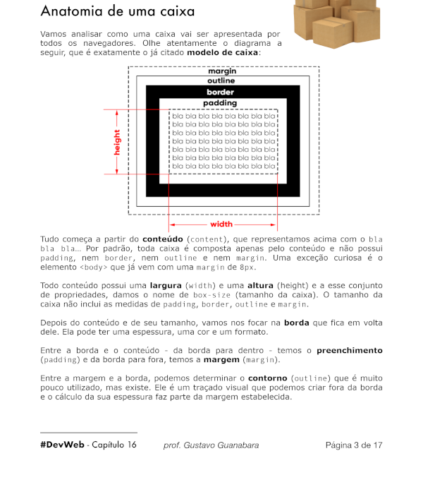
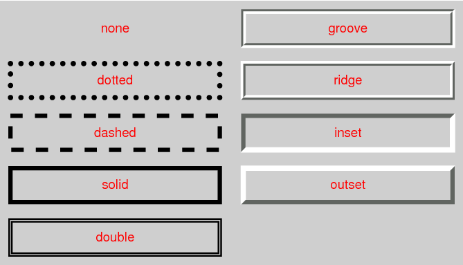

os seletores Personalisados são muito úteis quando você quer formatações diferentes para elementos do mesmo tipo, você não precisa ficar usando CSS inline e bagunçar seu HTML nestes casos, é só diferenciar os seletores
um id é um identificador de uma tag, se você der um id para uma tag você pode mudar as configurações de CSS dessa única tag, sem mudar as outras que forem do mesmo tipo
por exemplo, se tiver três h1, e você quiser que um seja diferente dos outros, você não precisa usar CSS inline, é só dar um id para o h1 que você quer, daí você vai poder mudar o CSS dele sem alterar os outros, e você vai mudarele com CSS local ou externo, sem poluir o HTMl
para dar um id para uma tag, é só usar o parâmetro id dentro da abertura dessa tag, e dentro das aspas você coloca a identificação, uma boa dica é sempre usar identificadores em letras minúsculas, porque se você criar um identificador com a primeira letra em maiúsculo e usar o id em minúsculo vai dar erro, então sempre em letras minúsculas para deixar mais organizado e não acontecer isso
o símbolo de # significa id em CSS, tudo que é id em HTML vira # em CSS, e tudo que é class(que veremos daqui a pouco) em HTML vira . em CSS, lembre-se bem disso
digamos que o identificador que você deu para esse h1 foi "especial", para mudar esse h1 no CSS nesse caso você iria usar h1#especial {configurações}
no exemplo você estaria dizendo ao seu código que as configurações dentro das chaves só vão ser aplicadas no h1 que tiver o id "especial", você não pode dar o mesmo id para vários elementos, se você fizer isso até vai dar certo, mas a w3c não recomenda isso, se quiser dar o mesmo id para mais de um elemento, você vai usar classe
as classes no CSS são identificas por ., ou seja, tudo que é class em HTML, é . no CSS
para dar uma class para um elemento, é a mesma coisa que o id, é só usar o parâmetro class na abertura da tag
uma dica para escolher o nome de uma class é escolher dependendo do que o elemento representa, não a formatação que ele vai receber. Tipo, se tiver um título principal, e você quer que ele seja Azul, você vai chamar a class de "principal", não de "azul"
para mudar a formatação de elementos de uma classe, é igual no id, digamos que o nome da classe seja "secundario", para mudar as configurações dos elementos dessa classe, você usaria .secundario {configurações}, nesse caso, todos os elementos que tiverem essa classe vão ser afetados, se você quiser que apenas os h2 dessa classe sejam afetados, você usaria h2.secundario {configurações}, se fossem todos os h2 e h3 dessa classe por exemplo, você poderia usar h2, h3.secundario {configurações}
você pode usar duas classes em um mesmo elemento, basta colocar as duas dentro das aspas, separadas apenas por um espaço
você também pode colocar um id e uma class para um mesmo elemento
se estiver em dúvida qual vai ser priorizado, olhe o style, sempre quem estiver mais abaixo vai ser a prioridade
se você quiser colocar uma class ou id para uma parte de um paragráfo por exemplo, sem afetar o resto do paragráfo, você pode usar a tag span, ela não faz absolutamente nada, mas você pode colocar a class ou id nela, e colocar dentro dela a parte do paragráfo que você quer usar a class ou id
você pode selecionar elementos que estão dentro de outros elementos, para isso você tem que indicar o caminho para esses elementos, que nem você faz com pastas, mas usando o sinal de >
por exemplo, digamos que você queira mudar as configurações de todos os links que estejam dentro de paragrafos, mas não os que estejam fora, então você usaria o seletor p > a {configurações}
mas agora, digamos que você queira mudar as configurações de todos os links que estejam dentro da tag main, mas se você colocasse "main > a {configurações}, os links dos paragrafos dentro do main não seriam afetados, só seriam afetados os links diretamente dentro do main, sem estar dentro de nenhuma outra tag, então nesse caso você usaria main a {configurações}
Dessa forma, todos os links dentro do main seriam afetados, até os dentro de outras tags do main.
pseudo-classe é uma classe que é dada para um elemento dependendo do seu estado
no CSS, as pseudo-classes são representadas por :
por exemplo, temos a pseudo-classe hover, elementos da pseudo-classe hover são aqueles que o mouse está em cima, ou seja, quando você passa o mouse por cima de um elemento, ele recebe a pseudo-classe hover, quando você tira o mouse desse elemento, ele perde essa classe
para mudar as configurações CSS dos elementos div da pseudo-classe hover por exemplo, escrevemos no CSS interno ou externo: div:hover {configurações}
você pode usar isso para dar meio que uma interatividade ao elemento, por exemplo,você pode configurar uma tag div com o fundo vermelho, usando div {background-color: red}, e embaixo colocar div:hover {background-color: blue}, desse jeito vai ter uma tag div com o fundo vermelho, e quando você passar o mouse por cima dela, ela vai receber a pseudo-classe hover e assim ficar com o fundo azul quando o mouse passar
outra coisa MUUUITO legal é fazer tipo uma animação dessa transição, para isso você usa o parâmetro transition-duration, nele você coloca um tempo em formato de segundo, e a transição vai levar esse tempo para acontecer ao invés de acontecer na hora, criando uma pequena animação
para usar um valor em segundo, é só colocar um s na direita desse valor, lembrando que pode ser um valor quebrado(usando o ponto, não vírgula)
você pode usar o parâmetro transition-duration tanto no elemento normal como no elemento com hover, se você usar no normal a animação vai acontecer quando você tirar o mouse de cima do elemento e ele mudar para a cor normal, se você colocar no elemento hover a animação vai acontecer quando você colocar o mouse em cima do elemento e ele mudar para a cor do hover, o ideal é usar nos dois!
com isso, podemos fazer um exemplo bem legal, digamos que você queira esconder um texto dentro de uma div, e mostrar ele quando o mouse passar por cima da div, primeiramente para esconder algo, você usaria no CSS display: none, o display serve para mostrar como vai ser a apresentação do texto, se o display for none, o texto vai ser invisível
então primeiramente a gente usaria no CSS div > p {display: none}, ou seja, todos os paragráfos dentro de divs seriam invisíveis, daí embaixo poderiamos colocar div:hover > p {display: block}, isso significa que todos os paragráfos dentro de divs de classificação hover serão visíveis, ou seja, o que iria acontecer é que o paragráfo ficaria invisível quando o div não for hover(ou seja, quando o mouse não estiver em cima do div), mas ficaria visível quando o div for hover, então quando o usuário passar o mouse em cima do div, o texto escondido vai aparecer
o sinal > significa children em CSS, então no caso acima, ele estaria mudando as configurações de paragráfos filhos de divs
o guanabara também ensina outras duas pseudo-classes, o visited, que éuma pseudo-classe de links, todo a:visited são links para páginas quejá foram visitadas alguma vez
e a outra é o active, é uma pseudo-classe dada para elementos segurados pelo mouse, ou seja, quando você segura o botão esquerdo do mouse em algo, ele recebe a pseudo-classe active
Pseudo-elementos mexem no conteúdo de elementos, eles são representados por :: no CSS
vamos aprender dois exemplos de Pseudo-elementos, o before e o after
o before e o after adicionam conteúdo para um elemento, o before adiciona conteúdo à esquerda do elemento, e o after à direita
você pode usar eles com o parâmetro content
se você usar por exemplo a::after {content: "adicionar isso"}, ele vai adicionar a frase entre parentêses à direita de todos os links, você poderia usar a::before {content: "adicionar isso"}, ele adicionaria à esquerda, se você quisesse colocar algo à direita de todos os links e mudar a cor do que vai ser adicionado para azul por exemplo, você usaria a::after{content: "adicionar"; color: blue}, você pode mudar a aparência do que vai ser adicionado da forma que você quiser
você pode misturar ids, classes, pseudo-classes e pseudo-elementos em um mesmo seletor, então digamos que você queira adicionar uma palavra à esquerda de todos os elementos da classe "especial", então você usaria .especial::before {content: "adicionar"}
um seletor global é um seletor que muda as configurações de todos os elementos do site, ele é o *(asterisco)
ao criar um seletor global, todas as configurações dentro dele vão ser passadas para todos os elementos, esse seletor precisa estar no topo do documento CSS
se você quisesse tirar padding e o margin de todos os elementos, por exemplo, você usaria:
* {
padding: 0px
margin: 0px
}
o CSS não é uma linguagem de programação, mas ele você pode usar variaveis para guardar valores como uma cor ou uma fonte, dessa forma você pode inserir a mesma cor por exemplo, em varios elementos, apenas chamando ela pela variavel, facilita muito a vida
para criar variaveis em css, você declarar elas dentro de um seletor no inicio do documento CSS chamado :root
ou seja, você vai criar esse seletor e declarar as variaveis nele, para declarar uma variavel nele você coloca --, daí o nome da variavel, dois pontos(:) daí o valor da variavel
se você quiser criar duas variaveis por exemplo, uma chamada "cor_padrao" com a cor #3ddc84(que é um tom de verde), e a outra chamada "fonte_padrao" com a fonte Arial, você usaria:
:root {
--cor_padrao: #3ddc84
--fonte_padrao: Arial
}
esse seletor tem que estar obrigatoriamente no topo do documento CSS, mais acima do que o *(seletor global), se não vai dar errado
dessa forma, se você quisesse usar a cor #3ddc84 em um background-color, você poderia colocar background-color: var(--cor_padrao) ao invés de background-color: #3ddc84
da mesma forma, se você quisesse usar a fonte Arial em um elemento, você colocaria font-family: var(--fonte_padrao) ao invés de font-family: Arial
você precisar colocar a variavel dentro desse var() para dar certo, para o programa entender que é uma variavel
caixas são espaços na tela, tudo que é exibido na tela é exibido em forma de caixa, toda caixa tem altura e largura, se você não configurar nada por padrão a caixa vai ter a largura da tela inteira.
veja a seguir a anatomia de uma caixa:
em um site as caixas ficam uma dentro da outra, isso se chama aninhamento, isso é um dos principais fundamentos para você dar forma para um site
a maior caixa de um site é o body por curiosidade
as caixas podem ser de dois tipos, box-level e inline-level. Pense em um paragráfo, dentro desse paragráfo você tem várias linhas de conteúdo, digamos que você coloque uma tag exatamente no meio desse conteúdo que escreva algo na tela, se essa tag for do tipo box-level ela vai quebrar uma linha, vai escrever, vai quebrar mais uma linha e só daí ele vai continuar o conteúdo. Mas se essa tag for do tipo inline-level, ele não vai quebrar linha, vai escrever e daí já vai continuar o conteúdo
exemplos de tags box-level são h1, p, main, div, e MUITAS outras
exemplos de tags inline-level são strong, input, span e MUITAS outras
então vamos voltar ao exemplo, mas agora vamos usar a tag div para a tag box-level e a tag span para a tag inline-level, se você tem um pragráfo com conteúdo, e no meio desse conteúdo você coloca a tag div coma palavra "exemplo", ele vai quebrar uma linha, vai escrever "exemplo", vai quebrar mais uma linha e daí sim vai continuar o conteúdo. Mas se você usar a tag span no meio desse conteúdo com a palavra "exemplo", ele não vai quebrar linha, vai escrever "exemplo" e vai continuar o conteúdo na mesma linha mesmo, espero que tenha ficado claro.
você pode transformar um elemento box-level para inline-level e vise-versa, o parâmetro que decide isso é o display, elementos com display: block; são do tipo box-level, e os elementos com display: inline são do tipo inline-level, você pode mudar esse parâmetro se quiser mudar o tipo da caixa.
Uma ferramenta que ajuda demais para mudar as configurações de alguma caixa é o devtools, abra seu site no google(tem que ser o google), aperte o botão direito do mouse e selecione "inspecionar", vá na area de elementos e aumente o tamanho da janela, você vai ver que vai ter uma parte da janela que vai ficar parecida com o Visual Studio, aperte nessa parte o elemento que você quer selecionar, daí na outra parte da janela vai ter as configurações CSS que foram aplicadas para esse elemento, se você não tiver mudado nada ele vai usar as configurações user agent, que é o padrão. Também um desenho de uma caixa divida em partes, com números indicando tamanhos de cada parte, os - são partes que são sem tamanhos, ou seja, que não existem.
para mudar alguma configuração CSS você aperta nela(na area de configurações, não de elementos), depois de apertar você pode rodar a rodinha do mouse se for um número, ou reescrever se for uma palavra, lembrando que você vai estar mudando a versão que já chegou em seu computador, não o original
se quiser mudar a borda você pode usar 3 configurações(que são as mais usadas, mas existem outras), o border-width, o border-style, e o border-color, o border-width é a expessura da borda, você muda isso por um número de px, o border-style é o estilo da borda, olhe os estilos de borda:
você também pode usar o shorthand border, nele você informa primeiro o border-width, depois o border-style, e depois o border-color, separados apenas por espaços
você pode colocar uma imagem como borda também, nós vamos ver isso mais abaixo
agora vamos ajustar o padding, o padding é ajustado por um número de px. O padding, o margin e o outline podem ser ajustados por lado, ou seja, você pode ajustar apenas o padding de cima, ou apenas o da direita, assim você pode dar um padding diferente para cada lado, o border também tem essa possibilidade na verdade, mas é muito pouco usado
para fazer isso, você usa padding-top para o padding de cima, o padding-right para o padding da direita, o padding-bottom para o de baixo, e o padding-left para o padding da esquerda
o recomendado é você indicar o padding(e as outras medidas de caixa) de cada lado em sentido horário, ou seja, primeiro o de cima, depois o da direita, depois o de baixo, e depois o da esquerda
você pode usar o shorthand padding, nele você informa os tamanhos em ordem de relógio, ou seja, primeiro o de cima, depois o da direita, depois o de baixo, e por fim o da esquerda, mas se todos tiverem o mesmo valor você pode digitar apenas esse valor, então ele será utilizado em todos os lados, se você colocar dois valores, o padding de cima e de baixo vão ter o primeiro tamanho e o padding da esquerda e direita vão ter o segundo tamanho
é a mesma coisa para mudar a margem, você pode mudar um lado de uma margem isoladamente com margin-top, margin-right, margin-bottom, margin-left, de preferência nessa ordem, ou você usa o shorthand margin, e da os tamanhos em ordem de relógio como no padding, e se forem todos o mesmo tamanho você digita ele uma vez e esse valor será passado para todas as direções. Você pode colocar auto no margin, dessa forma o elemento sempre vai ficar no meio da janela, MAS ISSO SÓ FUNCIONA COM ELEMENTOS DE DISPLAY BLOCK, se a tela ou janela mudar de tamanho ele vai se adaptar, e como no padding, se você colocar dois valores, o margin de cima e de baixo vão ter o primeiro tamanho e o margin da esquerda e direita vão ter o segundo tamanho
e mais uma coisa, se você quiser centralizar a margem da esquerda e a da direita, coloque auto nos lugares do margin-left e margin-right no shorthand
o outline fica dentro da margem, e grudado na borda, você muda essa medida igual a borda, você usa outline-width, outline-style, e outline-color, os estilos de outline são os mesmos que os de borda,você pode olhar a imagem um pouco mais pra cima. O outline pode ser maior do que a margem, um não interfere no tamanho do outro
o shorthand do outline é igual ao do border, primeiro você indica o outline-width, depois o outline-style, e depois o outline-color
IMPORTANTE: você pode usar números negativos no margin ou padding, dessa forma a caixa vai crescer, se você colocar um padding-left negativo por exemplo, a caixa vai crescer para a esquerda, da pra fazer muita coisa útil com isso
se tiver tentado isso, você provavelmente percebeu que não é possivel usar o margin: auto; em imagens, isso é porque elas são do tipo inline-level,que vimos mais a acima
para centralizar imagens, é só mudar o tipo delas para box-level(ou block), para isso nós mudamos o formato do display usando display: block;, dessa forma, a imagem vai mudar para o tipo box-level e o margin: auto; vai funcionar nessa imagem
bom, você já prendeu a centralizar elementos na horizontal com o margin: auto;, mas você deve estar se perguntando como centralizar eles também na vertical, você vai precisar fazer algumas gambiarras se quiser fazer isso sem usar flexbox ou grid
a primeira coisa que você vai precisar fazer é mudar o position do elemento pai e do elemento que você quer centralizar, no elemento pai você configura position: relative;, e na caixa que você quer centralizar você configura position: absolute;
como você já aprendeu ou vai aprender mais abaixo na wiki, quando você configura o position pra absolute e este elemento está dentro de um elemento de position relative, você pode posicionar o elemento filho em relação ao pai usando os parâmetro top e left(veja mais abaixo na wiki para entender melhor), então agora você vai precisar usar esses dois no elemento que você quer centralizar(o filho) com o valor de 50% OS DOIS
agora a ponta esquerda de cima da imagem já está exatamente no centro do elemento pai, vamos ter que colocar o meio do elemento filho no local onde está a ponta esquerda dele, para isso vamos fazer uma 'transformação' com o parâmetro transform
o transform é uma das propriedades mais úteis do CSS, usando-a, elementos podem ser traduzidos, rotacionados, ter seu tamanho ajustado e inclinados de acordo com os valores definidos, pesquise mais sobre essa propriedade
No nosso caso, a gente vai 'traduzir' a caixa, isso significa que vamos posiciona-la, para isso vamos usar o transform: translate;
Agora você simplismente coloca transform: translate(-50%, -50%) nas configurações do elemento filho, o primeiro número do parentêses é o deslocamento para a direita, e o segundo é para baixo, como usamos números negativos o primeiro vai servir para deslocar para esquerda e o segundo para cima
Como você percebe nós colocamos valores em porcentagem, essa porcentagem é relacionada com a altura e a largura do elemento filho
é isso, fazendo esses passos a imagem vai ficar cravada no meio da div, mas não deixe de saber mais sobre o transform, é uma propriedade importante
como nós já vimos, um site é uma mistura de várias caixas, umas dentro das outras,para agrupar as caixas nós vamos usar tags semânticas, tem gente que agrupa caixas usando várias tags div e span, mas vira uma bagunça e não tem semântica, e semântica é super importante
existem 7 tags semânticas principais para ajeitar seu conteúdo, olhe só:
lembrando que essas tags são como divs, elas não tem nada de especial, mas elas são semânticas, sempre use elas para agrupar caixas
se você reparar, todas as caixas normais seguem uma ordem, uma depois da outra, e não dá pra posicionar, você até pode posicionar o conteúdo usando o padding, mas você só vai estar aumentando a caixa, não posicionando
para posicionar as suas caixas, você pode mudar a propriedade position, vamos entender como essa propriedade funciona
tem 4 tipos de position, static, absolute, relative, e fixed
se você não configurar o position de um elemento, ele por padrão vai ser do tipo static, elementos static seguem a ordem normal do site, ou seja, uma caixa depois da outra, elementos static não podem ser posicionados, os outros 3 podem
elementos com o position relative são parecidos com os static, a diferença é que eles podem ser posicionados, se você quiser você pode colocar um em cima do outro por exemplo, algo que não seria possivel com o static. Se você não posicionar um elemento relative, ele vai seguir a ordem normal das caixas, ele tem um espaço pra ele igual a um elemento static, mas depois de declarar um elemento como relative, você pode usar outros dois parâmetros que são o top e o left, neles você coloca medidas em px para definir a distancia da esquerda da tela(left) e de cima(top)
o top e o left também podem ter valores em porcentagem, daí o número de pixels que eles vão receber vai ser essa porcentagem do elemento pai, espero que tenha entendido o que eu quis dizer
elementos com o position absolute não ocupam nenhum espaço, eles não segue a ordem normal da caixa e por padrão só ficam por cima dos outros elementos, porque eles não tem um espaço reservado para eles no site, mas o absolute é um grande quebra galho no CSS. Com ele você pode posicionar qualquer elemento de acordo com o elemento pai que tenha um position diferente de static. Se o elemento pai for static, ele meio que nem vai fazer parte do elemento pai, ele só vai ficar jogado, mas se o elemento pai for um relative por exemplo, o elemento absolute vai ficar pra dentro do elemento pai, e ele vai poder ser posicionado com relação ao elemento pai, também usando os parâmetros top e left
os elementos com o position fixed são os mais diferentes, eles se posicionam em relação à tela, e eles não saem do ponto onde foram posicionados, é como naqueles sites que você entra e o cabeçalho te acompanha site inteiro. Elementos fixed, assim como os absolute, não ocupam nenhum espaço, você posiciona eles com os parâmetros top e left, e eles ficam naquele local desde que o usuario abre o site até o fim
Isso é MUITO importante, você pode fazer o layout com o mockflow, lá você faz login se já tiver uma conta ou cria com clicando em "sign up", pra você criar uma conta você precisa informar seu nome completo, um email, uma senha que você vai criar agora, e repetir essa senha na proxima caixa de texto
A Responsividade de um site é a forma que ele vai responder a diferentes dispositivos e telas, não tem como fazer um site sem responsividade
nessa parte do curso, nós aprendemos poucos recursos de responsividade, mas com eles já dá pra fazer o site se adaptar bem
para começar na responsividade, nós vamos aprender os recursos min-width e max-width, eles limitam a altura mínima e a maxima(nessa ordem), para dar certo você precisa usar os dois, nem um nem outro, mas sim os dois
com esses parâmetros, o site vai diminuir até o min-width quando a tela for menor, e vai aumentar até o max-width quando a tela for maior, então por exemplo, quando a tela estiver diminuindo, o site vai diminuir até chegar no min-width, mas quando chegar no min-width ele vai parar de diminuir, mesmo que a tela seja menor que algum elemento, o mesmo vale para o max-width, o site vai aumentar sempre que preciso, até chegar ao max-width, daí os elementos vão parar de crescer mesmo que a tela seja maior que os elementos
para usar eles é só colocar em cada elemento que pode ficar vazando caso a tela seja menor que o elemento, os principais alvos são as mídias como imagens e vídeos e caixas de texto que não sejam justify(porque o justify já é responsivo), é só colocar o número desejado para cada um em formato de px
além do min-width e max-width, você também pode usar um outro elemento responsivo que é o width normal, mas com valores em porcentagem, se você colocar o parâmetro width: 100%; em uma imagem por exemplo, ela vai ocupar sempre a largura inteira da caixa, isso significa que se a caixa diminuir(por meio da responsividade), essa imagem também vai diminuir e se adaptar, o mesmo acotece se a caixa aumentar
e não se esqueça do elemento picture que aprendemos no módulo passado, você pode conferir lá, ele adapta as imagens
Se você já tentou isso só com o que acabamos de aprender, você provavelmente percebeu que os videos do youtube e do vimeo não são muito compátiveis com o min-width e o max-width, isso é porque eles já vieram prontos para o seu código, mas vamos aprender um truque para transforma-los em vídeos responsivos
primeiramente, você precisa envolopar o iframe do video com uma tag div, daí você coloca um id ou class na div para conseguir mudar as configurações dela e do iframe
agora você coloca um position: absolute; no IFRAME, e um position: relative; na DIV, como nós vimos mais acima nesse capitúlo, elementos absolute podem ser posicionados e configurados em relação à tag pai se ela não for static(por isso mudamos a div para relative)
fazendo isso, você vai ver que vai ficar tudo bagunçado, o vídeo vai ficar em cima dos elementos abaixo da div, e a div não vai nem aparecer, isso é porque o video é absolute, sendo assim ele não ocupa espaço, daí a div se comporta como se estivesse vazia, sem nada dentro, ou seja, ela some, mas para resolver isso você aumenta o padding-bottom da DIV até ela cobrir todo o vídeo, de preferência usando uma porcentagem
depois disso, você pode posicionar o video dentro da div usando os parâmetros top e left nas configurações do iframe, mas se o video for cobrir a div inteira não precisa, é só uma opção
agora você vai mudar o height e o width do iframe, coloque uma porcentagem em cada um, se você quiser que a div não apareça e o vídeo cubra a div inteira coloque 100% nos dois, mas se quiser que a div faça uma borda em cima e dos lados, você pode colocar 90% por exemplo, eu acho que 100% fica mais bonito na maioria dos casos
agora dê play no vídeo, se ele ficar com barras pretas dos lados ou em cima você precisa mudar o padding-bottom da DIV, se as barras estiverem em cima ou em baixo você diminui o padding-bottom, se as barras estiverem dos lados você aumenta, encontre a medida perfeita(mas sempre em porcentagem)
para colocar sombras em uma caixa nós vamos usar o parâmetro box-shadow, ele é um shorthand, nele você coloca primeiro o deslocamento da sombra para os lados, depois o deslocamento da sombra para cima ou para baixo, depois o quanto a sombra vai embassar, depois o quanto a sombra vai se espalhar, e por fim a cor da sombra, lembrando que você precisa informar as medidas em forma de px que não são a cor
quando você for colocar o deslocamento da sombra para os lados, se você colocar um número positivo a sombra vai ficar deslocada para a direita, se colocar um número negativo ela vai ficar deslocada para a esquerda, o mesmo vale para cima e para baixo, números positivos deslocam para baixo, e negativos para cima
sobre a cor, sempre use o preto, não existe sombra de outra cor, o que você vai mudar é a transparência, sempre deixe a sombra um pouco transparênte, isso dá a impressão que é uma sombra real
mas isso só serve para caixas, se você quiser colocar sombra em um texto você usa text-shadow, nele você coloca os mesmos valores do box-shadow, mas não coloca embassamento
é bom você usar o devtools para te ajudar com as sombras também, você pode mudar as sombras à mão no devtools e depois copiar para o Visual Studio, mas você também pode criar sua própria sombra com uma ferramenta do devtools
para usar essa ferramenta, primeiro você precisa criar a propriedade box-shadow no código original, depois você abre o devtools(no google chrome), você seleciona esse elemento e nas configurações css dele vai aparecer o box-shadow, à esquerda da primeira medida vai ter um "quadradinho", aperte nesse quadrado para abrir o editor de sombra
é possivel que a forma de abrir esse editor mude, e para entender qual editor eu estou falando vou deixar um link do guanabara abrindo
para arredondar as vértices(que são as pontas) de uma caixa, você usa o border-radius
no border-radius você coloca valores em px, você pode colocar quatro, dois, ou um único valor
quando você coloca quatro valores, cada valor vai estar configurando:
quando você coloca dois valores, cada um configura:
se você colocar um único valor, que é o mais comum e que fica mais legal, ele arredonda todas as bordas com aquele valor
você também pode colocar porcentagem, mas é menos usado, geralmente a porcentagem é usada para deixar uma caixa redonda, se você colocar um border-radius de 50% em uma caixa não muito grande, ela vai ficar em forma de círculo
você pode colocar bordas em formato de imagem em uma caixa, apesar de isso ser extremamente pouco usado e feio, mas vai que você precisa um dia?
mas para criar uma borda com uma imagem, primeiro você precisa ter essa imagem, você pode pegar uma imagem pronta ou fazer você mesmo com o gimp, para dar certo o meio da imagem tem que estar vazio
se quiser ter uma ideia de como criar uma imagem dessas, clique nesse link com o guanabara fazendo a dele
com a imagem, você primeiro coloca o parâmetro border normal, não vai dar certo se o elemento já não tiver uma borda normal
depois você usa o parâmetro border-image, nele você coloca primeiro a função url('') e no meio das aspas desses parentêses você coloca a url da imagem, você pode usar ctrl+enter para ver as opções
depois da url, você coloca o corte(é só um número, não uma medida como px por exemplo), e por último você tem duas opções, você pode colocar repeat ou stretch, geralmente você vai usar o repeat
depois de colocar esses 3 parâmetros no border-image, você ajusta o segundo parâmetro como devtools até ficar no ponto perfeito
Para o marcador não ficar fora da caixa, você tem que usar a configuração list-style-position: inside; no CSS da lista
Você pode escolher quantas colunas a lista vai ter usando o parâmetro columns, então digamos que você quisesse uma lista de duas colunas, você colocaria columns: 2; no CSS da lista
o parâmetro list-style-type muda o marcador da lista, então se você quisesse por exemplo trocar o marcador por um emoji, e digamos que o código desse emoji é 2714, então você usaria list-style-type: "\2714", e mais uma dica sobre isso, se achar que ficou muito apertado, você pode usar o código \00A0 depois do código do emoji, esse código simula um espaço, depois dessa mudança ficaria list-style-type: "\2714\00A0', e nunca se esqueça das aspas
Acessar a Primeira Parte